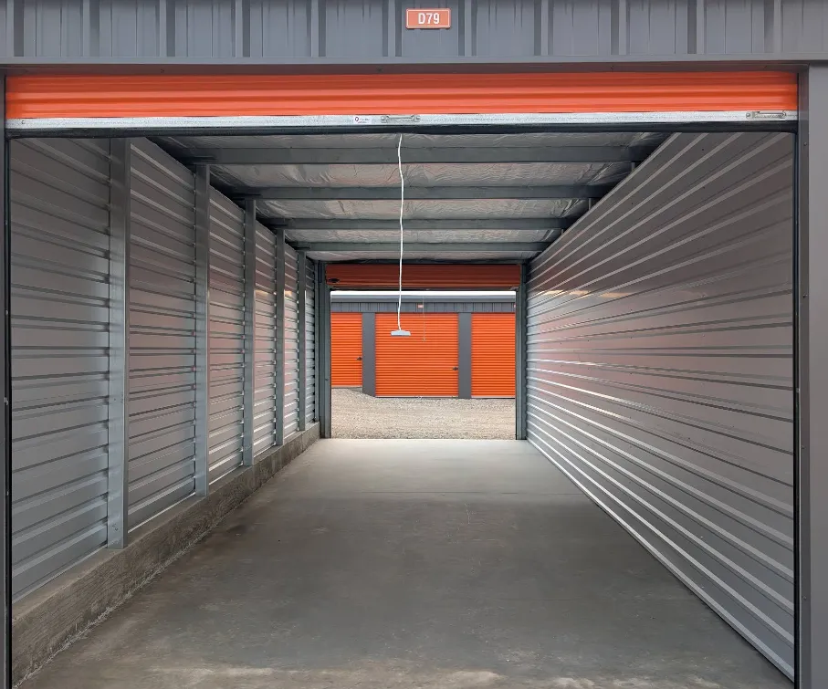
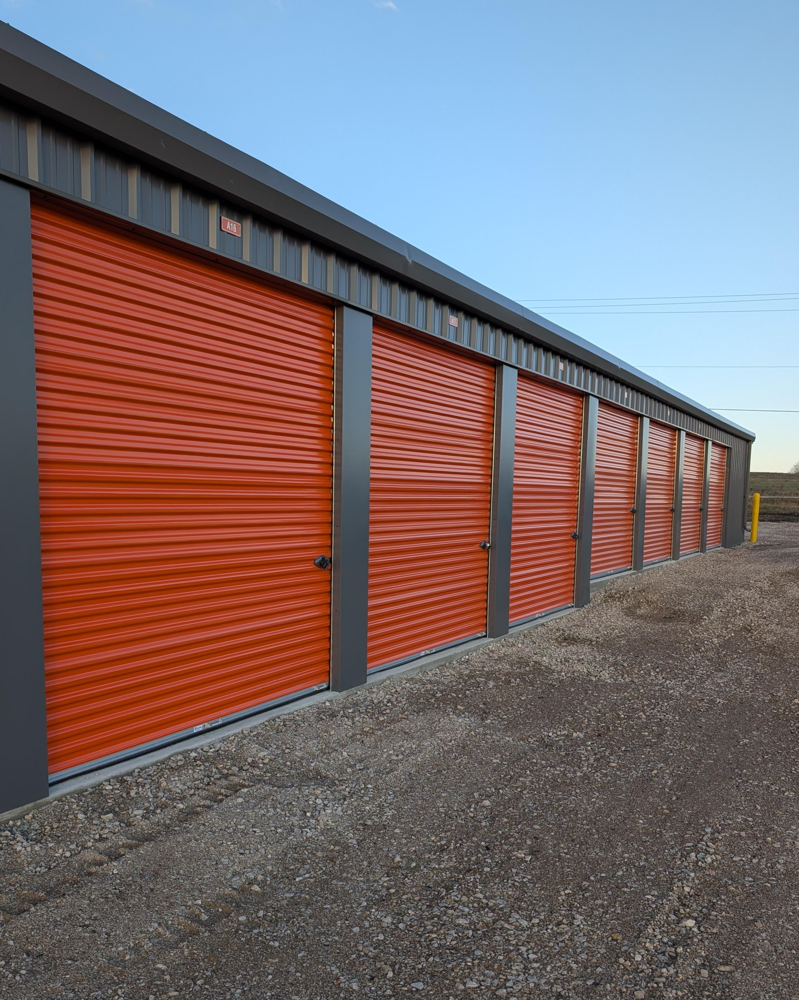
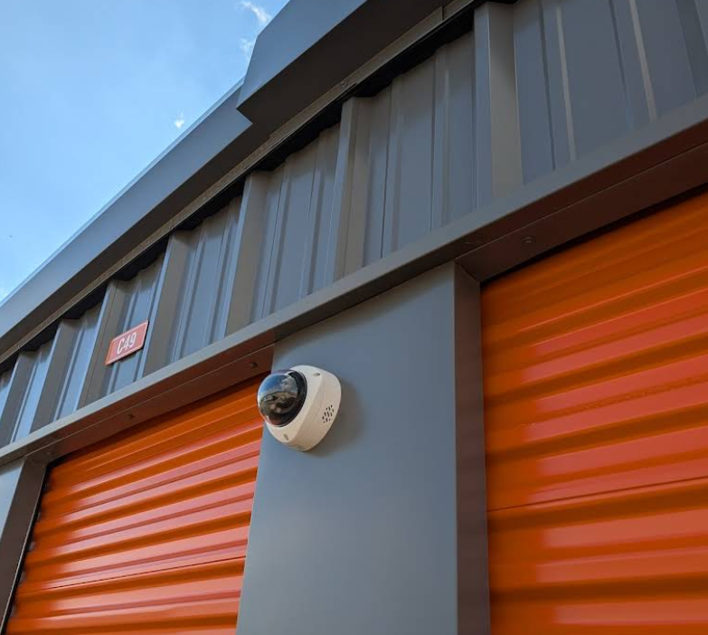

How to Choose the Right Storage Unit Size
Find the perfect fit for your belongings without overpaying.

If you’re renting a mini storage unit in Parsons for the first time, one of the biggest questions is: what size do I actually need? Pick something too small and you’re cramming boxes in like a game of Tetris with no good ending. Pick something too big and you’re paying for empty space every month. Either way, it’s frustrating — and totally avoidable with a little planning.
Here at Labette County Storage on US-59, we talk folks through this decision every week. Whether you’re clearing out a garage before the Labette County Fair, making room during a renovation near downtown Parsons, or storing a boat for the off-season, the right self storage unit size depends on what you’re putting in it and how long you plan to keep it there. This guide breaks down each size we offer, what actually fits inside, and how to make a confident choice the first time around.
Start With What You’re Storing
Before you even look at unit sizes, take a few minutes to make a mental inventory of everything you plan to store. Walk through your home room by room if you need to. Are you stashing a few boxes of holiday decorations and some seasonal gear? Or are you packing up most of a household for a move? The answer will narrow things down fast.
A good rule of thumb: think about the rooms in your home. A single bedroom’s worth of furniture and boxes typically fits in a 10x10 mini storage unit. A full three-bedroom house usually needs a 10x20 or larger. If you’re mostly storing smaller items — documents, seasonal clothes, sporting goods — you can probably get by with something smaller. If you’ve got big furniture, appliances, or vehicles in the mix, plan for more square footage.
It also helps to think about access. If you’re going to be visiting your self storage unit regularly — say, pulling out camping gear before a weekend at Forest Park or grabbing tools for a project — you’ll want a unit with enough room to move around inside. That’s a different calculation than someone who’s loading everything in once and not opening the door for six months.
Storage Unit Sizes at Labette County Storage
We carry a range of unit sizes at our 1830 S US-59 facility, from compact spaces for a few boxes to large drive-up units that can hold a whole household or a vehicle. Here’s what to expect from each one.
5x10 (50 sq ft)
About the size of a walk-in closet. A 5x10 mini storage unit is great for seasonal items like holiday decorations, a push mower, hunting and fishing gear, or a few pieces of small furniture like end tables or chairs. This is our most popular size for Parsons residents who just need a little extra breathing room at home. If your garage is overflowing or your closets can’t take one more box, a 5x10 solves the problem without breaking the bank.
You can typically fit about 15 to 20 standard moving boxes in a 5x10, plus a few odd-shaped items. It’s also a solid choice for college students heading home for the summer or anyone downsizing temporarily.
10x10 (100 sq ft)
Think of a standard bedroom — that’s roughly the footprint of a 10x10 unit. This size fits the contents of a one-bedroom apartment, including a couch, mattress set, dining table, dresser, and several boxes. It’s also a go-to for local business owners along downtown Parsons who need to store inventory, records, or extra supplies without renting additional commercial space.
If you’re asking, “What size storage unit do I need for a one-bedroom apartment?” — this is your answer about 90 percent of the time. You’ll have room for all the major furniture pieces plus 20 to 30 boxes stacked along the walls.
10x15 (150 sq ft)
A step up that gives you real breathing room. A 10x15 self storage unit fits a two-bedroom apartment or a small office’s worth of furniture and equipment. You’ll have enough space to create an aisle down the middle so you can reach items in the back without unstacking everything — which is a big deal if you plan to access your unit regularly.
This size works well for families who are between homes in the Parsons area and need to store the contents of a couple of bedrooms plus a living room. It’s also popular with folks who run small operations out near US-59 and need a place for tools, materials, or product inventory.
10x20 (200 sq ft)
About the size of a one-car garage. A 10x20 mini storage unit handles three to four bedrooms of furniture, appliances, and boxes comfortably. This is the size most popular with Labette County families who are doing a major renovation, selling a home, or in between places and need to store nearly everything they own.
If your question is, “What size do I need for a two-bedroom apartment?” — a 10x20 gives you plenty of room for all the furniture, all the boxes, and space left over for a few larger items like a riding mower or a stack of tires. You won’t feel like you’re fighting the unit every time you open the door.
10x30 and 12x30 (300+ sq ft)
Our largest units at the US-59 facility. A 10x30 or 12x30 self storage unit can hold the contents of a full house — we’re talking multiple bedroom sets, a full kitchen’s worth of appliances, living room furniture, and dozens of boxes. These units are also the right call for vehicles, boats, farm equipment, trailers, or large amounts of commercial inventory.
Folks who are storing a car, a boat they pull out to the local lakes, or farm implements between seasons tend to land on these larger units. With drive-up access at our facility, you can back a truck or trailer right up to the door for easy loading and unloading — no hauling things down hallways or up elevators.
Common Parsons Storage Scenarios
Based on the hundreds of tenants who’ve rented at Labette County Storage, here are the situations we see most often and the sizes that tend to work best.
- Seasonal gear rotation — Lawn mowers, snow blowers, fishing rods, hunting gear, and holiday decorations. A 5x10 or 10x10 handles this nicely. Plenty of our tenants swap items out with the seasons, pulling the mower in fall and the snow blower in spring.
- Household moves — Whether you’re relocating within Parsons, moving closer to family near the Iron Horse Museum, or heading out of state, a 10x15 or 10x20 gives you a staging area so you don’t have to do everything in one day. Month-to-month leases mean you’re never locked in longer than you need.
- Home renovations — Redoing the kitchen or finally finishing the basement? A 10x10 or 10x15 keeps your furniture and belongings safe from dust and paint while the work gets done.
- Business inventory and records — Shop owners in downtown Parsons use our units for overstock, seasonal merchandise, and document storage. A 10x10 gives most small businesses plenty of room.
- Vehicles and equipment — Boats, trailers, ATVs, classic cars, and farm implements. Our 10x30 and 12x30 units with drive-up access are built for this.
- Military families — Parsons has deep military roots, and we’re proud to be veteran-owned. Active duty and veteran families get a 10% military discount on any unit size — just ask when you reserve.
Tips to Maximize Your Storage Space
No matter what size unit you choose, smart packing can make a big difference. Here’s how to get the most out of every square foot in your self storage unit.
- Stack vertically. Use sturdy, uniform-sized boxes and put heavier items on the bottom. Most of our units have ceilings around 8 to 10 feet, so take advantage of that vertical space. A well-stacked unit can hold significantly more than one where everything is just pushed in at ground level.
- Leave an aisle. If you’ll be visiting your unit regularly, leave a path down the middle so you can reach items in the back. This is especially important for seasonal swaps — you don’t want to unload the whole unit just to grab a box of Christmas lights.
- Disassemble furniture. Take apart bed frames, tables, and shelving units to save space. Put the hardware in labeled plastic bags and tape them to the furniture so you’re not hunting for screws later.
- Use the inside of large items. Fill dresser drawers, appliances, and trash cans with smaller items like linens, towels, or bags of clothes. It’s free storage space you’ve already paid for.
- Put items you’ll need first near the door. Think about what you’re likely to pull out first and load it last. Future you will appreciate the planning.
Frequently Asked Questions About Storage Unit Sizes
What size do I need for a 2-bedroom apartment?
A 10x15 self storage unit handles most two-bedroom apartments. If you have a lot of furniture or bulky items, step up to a 10x20 for extra room. Either way, you’ll have space for beds, dressers, a couch, dining set, and plenty of boxes.
Can I store a car or boat?
Absolutely. A standard car fits in a 10x20 mini storage unit, and most boats or larger vehicles fit in a 10x30 or 12x30. All of our units at Labette County Storage have drive-up access, so you can pull your vehicle right in. If you’re storing a boat you tow out to area lakes or a classic car you only drive to the Labette County Fair, these larger units are the way to go.
What if I pick the wrong size?
Don’t stress about it. Our leases are month-to-month with no long-term contracts, so if you realize you need more space — or less — you can switch to a different unit size. Just give us a call at (620) 778-8196 and we’ll work it out. We’d rather help you find the right fit than have you stuck paying for space you don’t need.
Do I need to bring my own lock?
Nope. Every new tenant at Labette County Storage gets a free lock with their unit. It’s one less thing to worry about on move-in day. Our facility also has 24/7 security monitoring, so your belongings are protected around the clock.
When in Doubt, Size Up
If you’re on the fence between two sizes, go with the larger one. The monthly price difference between sizes is usually pretty small, and having a little extra room means you won’t have to play Tetris every time you need to grab something. Extra space also allows for better airflow around your belongings, which helps keep everything in good condition — especially during those hot, humid Kansas summers.
Plus, life happens. You might start with a plan to store just your bedroom furniture and end up adding boxes from the garage, a set of patio chairs, and that treadmill you’ve been meaning to deal with. A little extra room gives you flexibility without having to upgrade later.
Need help deciding? Check out our interactive size guide for a visual breakdown of each unit size, or take a look at our FAQ page for more answers to common questions. You can also give us a call at (620) 778-8196 — we’re happy to walk you through what works best for your situation. Labette County Storage is located at 1830 S US-59 in Parsons, and we’d love to help you find the perfect unit.
More from the Blog

Tips for Storing Items Long-Term
Learn how to properly pack, protect, and organize your unit so everything stays in great shape.

Why Self Storage Makes Moving Easier
A storage unit can take the stress out of your move. Here’s how.

What Is Tenant Protection and Do You Need It?
Your insurance might not cover items in storage. Here’s what to know.